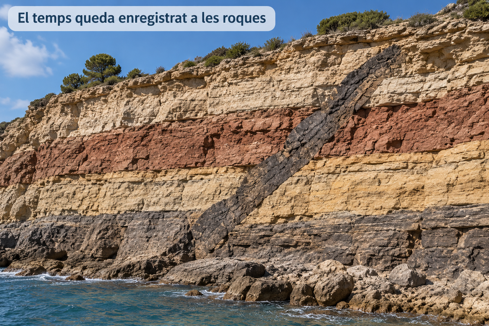
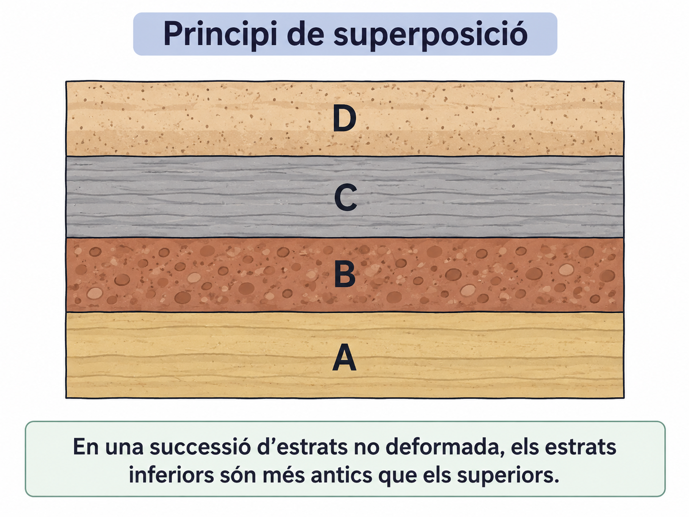
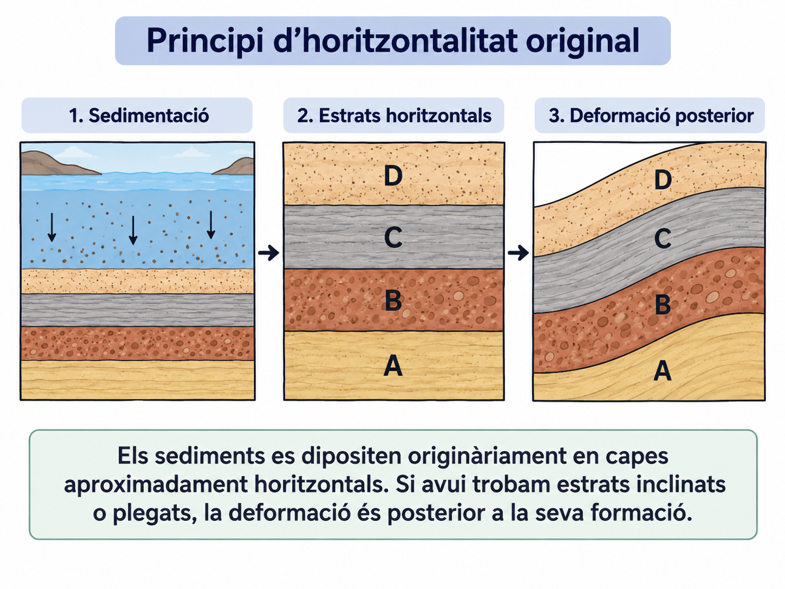
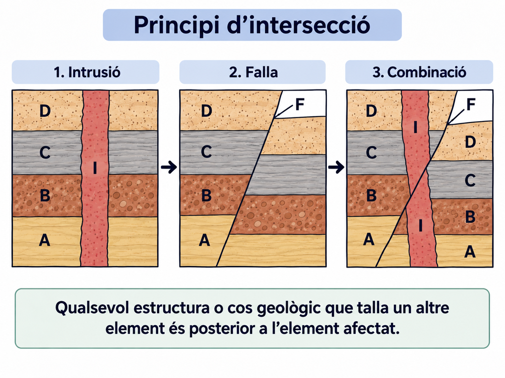
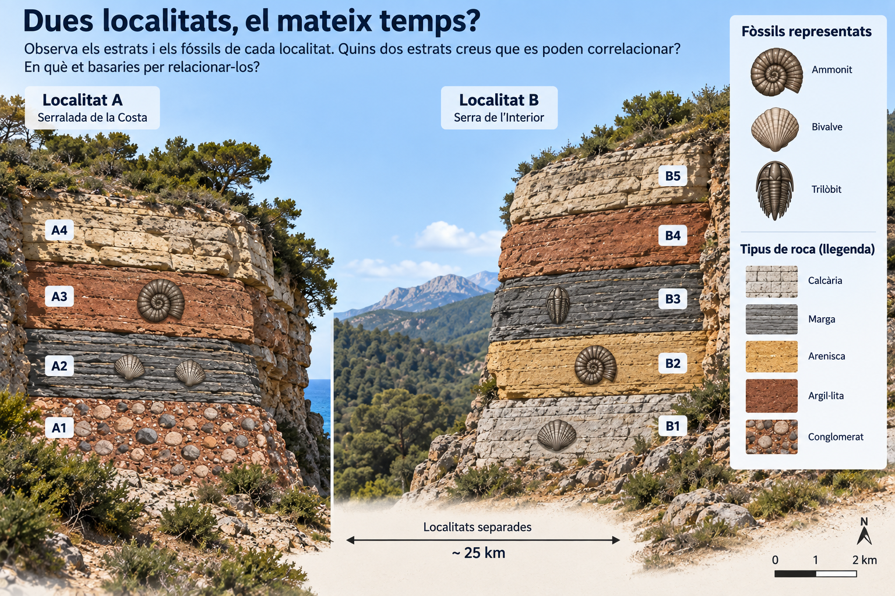
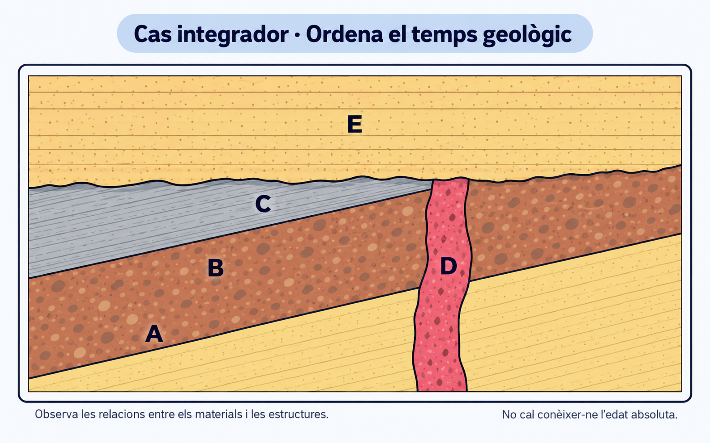
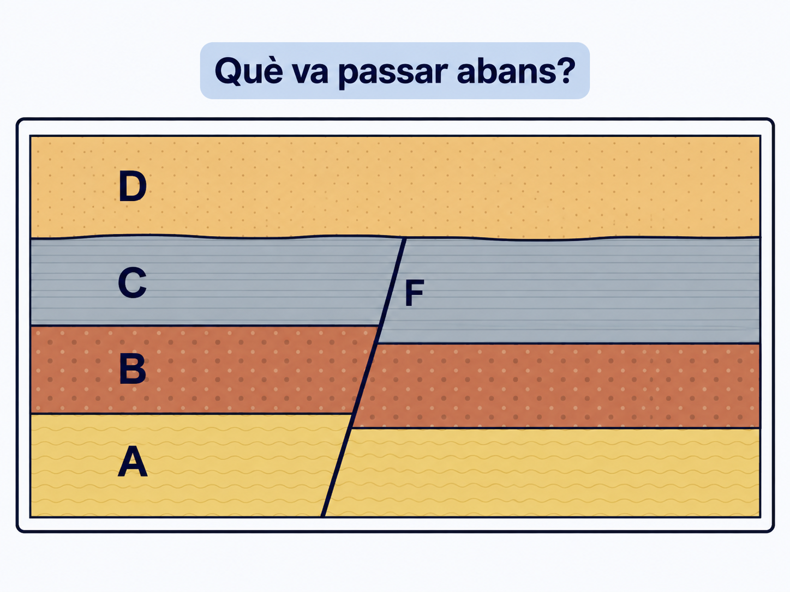

GEO-04 · Llegim el temps a les roques¶
Com podem saber què va passar abans i què va passar després?¶
1 · El repte: les roques tenen memòria¶

Observa l'aflorament abans de continuar.
Podem establir l'ordre d'alguns esdeveniments geològics encara que no en sapiguem l'edat en anys?
Datació relativa significa establir l'ordre dels materials i dels esdeveniments: què és més antic, què és més modern i què va passar abans o després.
La datació relativa no ens dona necessàriament una edat en anys.
2 · Apilar el temps¶

Mira els quatre estrats A, B, C i D.
Quin estrat s'havia de formar primer?
Principi de superposició¶
En una successió d'estrats que conserva la seva disposició original, els estrats inferiors són més antics que els situats damunt seu.
Ordena mentalment A, B, C i D del més antic al més modern abans de continuar.
3 · Si ara estan inclinats...¶

La figura mostra una seqüència: sedimentació, estrats horitzontals i deformació posterior.
Què va passar primer?
Principi d'horitzontalitat original¶
Els sediments es dipositen originàriament en capes aproximadament horitzontals. Si avui trobam estrats inclinats o plegats, la deformació és posterior a la seva formació.
Veure estrats deformats ens permet deduir un esdeveniment posterior a la sedimentació.
4 · Qui talla a qui?¶

Observa els tres casos: una intrusió, una falla i una combinació de totes dues.
En el primer cas, què és posterior?
Principi d'intersecció¶
Una estructura o cos geològic que talla un altre element és posterior a l'element tallat.
En el cas 3, quina seqüència és compatible amb la figura?
5 · Dues localitats, el mateix temps?¶

Els dos afloraments són de localitats diferents i no hi ha continuïtat lateral entre ells.
Quins dos estrats creus que es poden correlacionar? En quina evidència et bases?
Abans de comprovar la idea, fixa't que els estrats correlacionables no tenen per què ocupar la mateixa posició dins cada successió ni estar formats per la mateixa roca.
Si dos estrats de localitats diferents contenen el mateix fòssil guia, però tenen litologies diferents, poden correspondre al mateix interval de temps?
Principi de successió faunística¶
Els organismes que han viscut a la Terra han anat canviant al llarg del temps. Per això, determinats fòssils característics ens permeten ordenar i correlacionar estrats de localitats diferents.
Fòssil guia: fòssil especialment útil per correlacionar estrats perquè correspon a un interval temporal relativament curt i té una distribució geogràfica prou àmplia.
6 · El present ens ajuda a llegir el passat¶
Imagina que avui observes un torrent que transporta fragments de roca. Durant el transport, els fragments xoquen, es desgasten i poden acabar més arrodonits.
Milers o milions d'anys després, un geòleg troba una roca formada per còdols arrodonits cimentats.
Quina interpretació és més raonable?
Principi d'actualisme¶
Els processos geològics que observam avui ens ajuden a interpretar els materials i les estructures formats en el passat.
Això no significa que tots els processos hagin actuat sempre amb la mateixa intensitat ni que les condicions de la Terra no hagin canviat.
7 · Cinc eines per ordenar el passat¶
| Si observes... | Principi que et pot ajudar |
|---|---|
| Estrats situats uns damunt els altres | Superposició |
| Estrats inclinats o plegats | Horitzontalitat original |
| Una estructura que talla una altra | Intersecció |
| Fòssils característics en estrats de llocs diferents | Successió faunística |
| Empremtes d'un procés semblant a un procés actual | Actualisme |
No es tracta de memoritzar cinc definicions: es tracta de saber quin principi et permet justificar una relació temporal.
8 · Ara combina les pistes¶

En aquest tall hi ha cinc unitats o estructures: A, B, C, D i E.
Respon primer sense intentar reconstruir encara tota la història.
1. Quin és més antic, A o C?
2. La deformació d'A, B i C és anterior o posterior a la seva sedimentació?
3. La intrusió D és anterior o posterior a C?
4. D és anterior o posterior a E?
Finalment, ordena aquests esdeveniments del més antic al més modern: sedimentació d'A, B i C · deformació · intrusió D · erosió · sedimentació d'E.
9 · De relacions temporals a història geològica¶
Fins ara hem treballat sobretot preguntes locals:
Què és més antic? Què és posterior? Quina evidència ho demostra? Quin principi ho justifica?
La passa següent serà encadenar totes aquestes relacions per reconstruir una història geològica completa.
observació → relació temporal → principi → procés → història
Una història geològica no s'endevina: es reconstrueix i es justifica amb evidències.
10 · Exit ticket¶
Ho pots fer sense ajuda?¶

Ara no tens retroacció automàtica. Respon individualment.
1. Quin és més antic, A o C? Justifica-ho.
2. La falla F és anterior o posterior a C? Quina observació ho demostra?
3. La falla F és anterior o posterior a D? Justifica la resposta.
Si has fet aquesta activitat pel teu compte¶
Comprova que, sense mirar les definicions, pots explicar amb les teves paraules:
- com saps quin estrat és més antic en una successió no invertida;
- què et diu trobar estrats inclinats o plegats;
- què pots deduir quan una estructura talla una altra;
- com poden ajudar els fòssils a relacionar estrats de llocs diferents;
- per què els processos actuals ens ajuden a interpretar el passat.
Si qualcuna d'aquestes idees no et queda clara, torna al bloc corresponent abans de passar a la següent activitat.
Sessió guiada · Com es reconstrueix un tall?¶
Del que observam a una història geològica argumentada¶
Avui no aprendrem un principi nou. Aprendrem a combinar els que ja coneixem per reconstruir una seqüència d'esdeveniments.
observació → relació temporal → principi → procés → història
1 · El repte: quina història amaga aquest tall?¶
No intentis ordenar-ho tot encara.
Què podem afirmar amb seguretat només observant la figura?
2 · Primer observa; encara no contis la història¶
Identifica en el tall:
- quatre unitats sedimentàries: A, B, C i D;
- una intrusió: X;
- una falla: F;
- dues superfícies irregulars que haurem d'interpretar.
Descriure no és explicar. Primer identificam què hi ha i quines relacions geomètriques observam.
3 · Què és més antic: A, B o C?¶
Quina seqüència ordena correctament A, B i C del més antic al més modern?
Observació: A és sota B i B és sota C.
Relació temporal: A és anterior a B, i B és anterior a C.
Principi: superposició.
4 · Si A, B i C estan inclinats...¶
Quan es va produir la inclinació?
Observació: A, B i C comparteixen la mateixa inclinació.
Relació temporal: la deformació és posterior a la seva sedimentació.
Principi: horitzontalitat original.
5 · Què ens diu X?¶
La intrusió X és anterior o posterior als estrats A, B i C?
Observació: X talla A, B i C.
Relació temporal: X és posterior a A, B i C.
Principi: intersecció.
Podem saber només amb aquesta observació si X és anterior o posterior a la deformació?
6 · Una superfície també conta una història¶
Mira especialment què passa al sostre de C i de X.
Quina explicació és més coherent amb aquesta superfície irregular?
Observació: C i X queden truncats per una superfície irregular.
Relació temporal: l'erosió és posterior als materials que trunca.
Procés: erosió.
Alguns esdeveniments deixen una roca. D'altres deixen una superfície.
7 · I D?¶
D és pràcticament horitzontal i reposa damunt la superfície que acaba d'identificar-se.
D és anterior o posterior a l'erosió?
A més, X no talla D: el dic queda interromput a la superfície erosiva.
Ara ja podem afirmar que la sedimentació de D és posterior a la deformació, a la intrusió X i a l'erosió.
8 · Finalment, F¶
Quina observació ens permet afirmar que F és posterior a D?
Observació: F talla i desplaça D i les unitats inferiors.
Relació temporal: F és posterior a totes aquestes unitats.
Principi: intersecció.
9 · Reconstruïm la cronologia completa¶
Quina seqüència és compatible amb totes les relacions que hem establert?
Del més antic al més modern:
A → B → C → deformació → intrusió X → erosió → sedimentació de D → falla F → erosió actual.
10 · De la cronologia a la història geològica¶
Una cronologia és una llista. Una història geològica explica els processos i justifica l'ordre a partir de les evidències.
observació → relació temporal → principi → procés → història
Mostra una possible reconstrucció
Primer es varen dipositar successivament els sediments que originaren els estrats **A, B i C**. Posteriorment aquests materials es varen **deformar i inclinar**. Després es va produir la **intrusió X**, que talla els tres estrats. Una etapa d'**erosió** va truncar els materials inclinats i la intrusió. Damunt aquesta superfície es va dipositar horitzontalment **D**. Més tard, la **falla F** va tallar i desplaçar totes les unitats anteriors. Finalment, l'erosió va modelar la **superfície actual**.Quan reconstrueixis un tall nou, no cerquis una recepta fixa. Cerca relacions que puguis justificar.
1 · El repte: quina història amaga aquest tall?